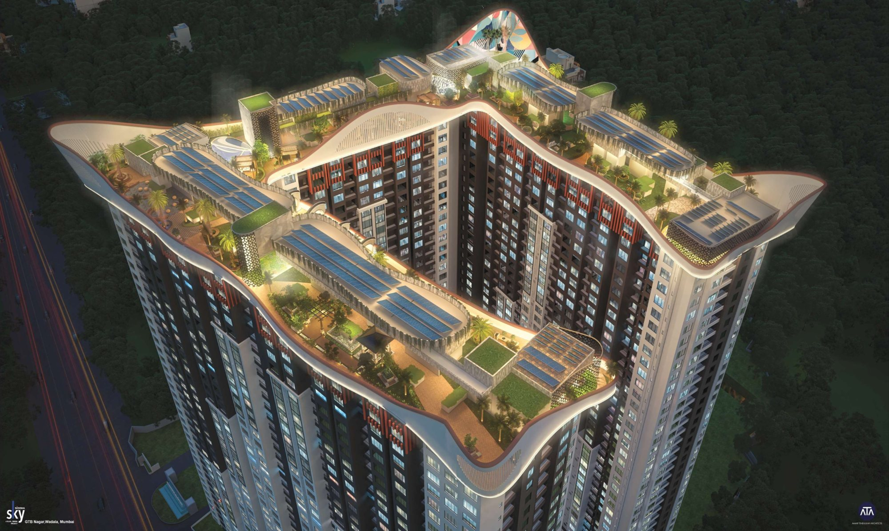
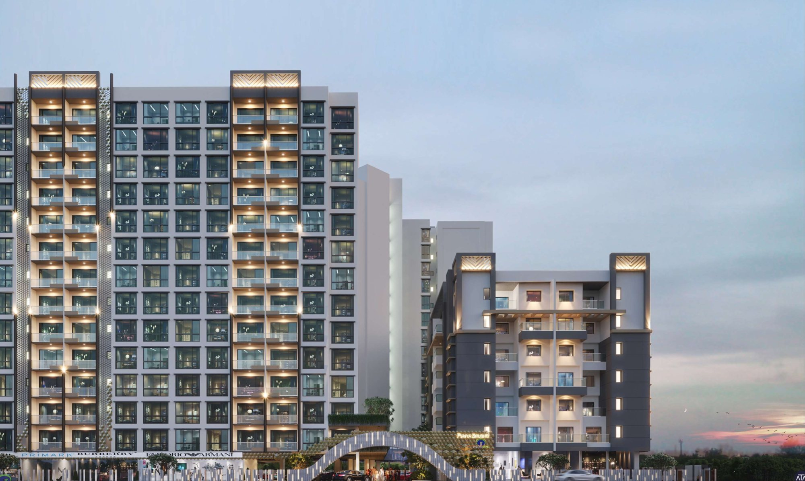
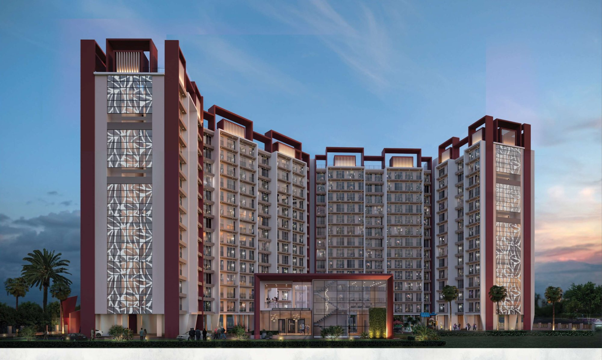
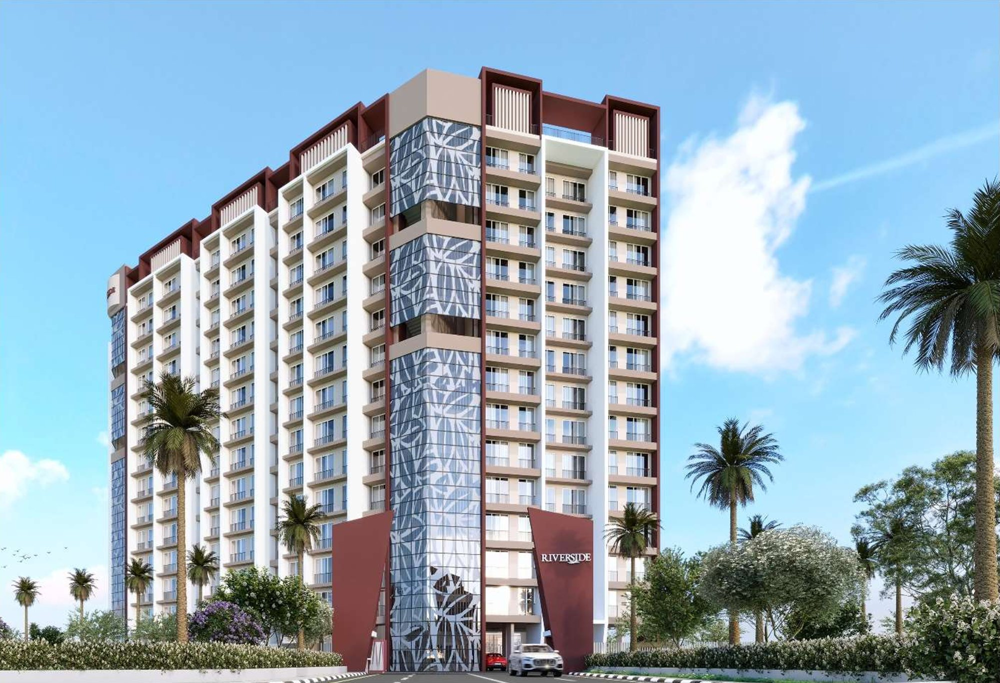

Work / 11 · Practice
Amar Tendulkar Architects
Clubs, housing, sales pavilions and interiors worked on during an architectural internship.

- Type
- Architectural internship
- Dates
- Jan – Apr 2023
- Office
- Amar Tendulkar Architects
- Role
- Architectural intern
- Work
- Concept presentations, schematic details, construction documentation, material specifications, site visits
- Images
- Renders by Amar Tendulkar Architects
During the internship she worked on project deliverables at several stages: concept presentations, schematic details, construction documentation and material specifications. Site visits showed how construction methods are resolved on site and how projects run at different levels, with some exposure to client engagement.
The projects below are from her professional practice portfolio for the internship. The design and the renders belong to the office and are shown with credit.
01Aqua Front Club, Central Park, Gurgaon
Architecture design for a clubhouse set beside water.
02Japanese Club, Central Park, Gurgaon
Architecture and interior design: a private dining room, spa, restaurant and yoga room.


03Siddha Sky, Wadala, Mumbai
Architectural design for a residential complex, with landscaped terraces at the top of the towers.


04Adani Sales Pavilion, Navi Mumbai
A sales pavilion beside a pool under a deep, cantilevered roof.

05Punya Shristi, Kolhapur
Residential towers with unit plans and a clubhouse.


06Riverside, Taloja, Navi Mumbai
Affordable housing, including the entry gate branding.




07Flower Valley Sales Pavilion, Central Park, Gurgaon
A sales pavilion under a geodesic structure, with a reception, lounge and café.